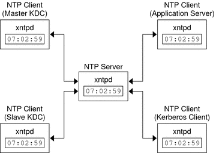

System Administration Guide: Security Services
|
|||
|
1. Security Services (Overview) Part II System, File, and Device Security 2. Managing Machine Security (Overview) 3. Controlling Access to Systems (Tasks) 4. Virus Scanning Service (Tasks) 5. Controlling Access to Devices (Tasks) 6. Using the Basic Audit Reporting Tool (Tasks) 7. Controlling Access to Files (Tasks) Part III Roles, Rights Profiles, and Privileges 8. Using Roles and Privileges (Overview) 9. Using Role-Based Access Control (Tasks) 10. Role-Based Access Control (Reference) Part IV Solaris Cryptographic Services 13. Solaris Cryptographic Framework (Overview) 14. Solaris Cryptographic Framework (Tasks) 15. Solaris Key Management Framework Part V Authentication Services and Secure Communication 16. Using Authentication Services (Tasks) 19. Using Solaris Secure Shell (Tasks) 20. Solaris Secure Shell (Reference) 21. Introduction to the Kerberos Service 22. Planning for the Kerberos Service 23. Configuring the Kerberos Service (Tasks) Configuring the Kerberos Service (Task Map) Configuring Additional Kerberos Services (Task Map) Configuring Cross-Realm Authentication Configuring Kerberos Network Application Servers Configuring Kerberos NFS Servers Swapping a Master KDC and a Slave KDC Administering the Kerberos Database Managing a KDC on an LDAP Directory Server Increasing Security on Kerberos Servers 24. Kerberos Error Messages and Troubleshooting 25. Administering Kerberos Principals and Policies (Tasks) 26. Using Kerberos Applications (Tasks) 27. The Kerberos Service (Reference) 28. Solaris Auditing (Overview) 29. Planning for Solaris Auditing 30. Managing Solaris Auditing (Tasks) |
Synchronizing Clocks Between KDCs and Kerberos ClientsAll hosts that participate in the Kerberos authentication system must have their internal clocks synchronized within a specified maximum amount of time (known as clock skew). This requirement provides another Kerberos security check. If the clock skew is exceeded between any of the participating hosts, client requests are rejected. The clock skew also determines how long application servers must keep track of all Kerberos protocol messages, in order to recognize and reject replayed requests. So, the longer the clock skew value, the more information that application servers have to collect. The default value for the maximum clock skew is 300 seconds (five minutes). You can change this default in the libdefaults section of the krb5.conf file. Note - For security reasons, do not increase the clock skew beyond 300 seconds. Because maintaining synchronized clocks between the KDCs and Kerberos clients is important, you should use the Network Time Protocol (NTP) software to synchronize them. NTP public domain software from the University of Delaware is included in the Solaris software, starting with the Solaris 2.6 release. Note - Another way to synchronize clocks is to use the rdate command and cron jobs, a process that can be less involved than using NTP. However, this section focuses on using NTP. And, if you use the network to synchronize the clocks, the clock synchronization protocol must itself be secure. NTP enables you to manage precise time or network clock synchronization, or both, in a network environment. NTP is basically a server-client implementation. You pick one system to be the master clock (the NTP server). Then, you set up all your other systems (the NTP clients) to synchronize their clocks with the master clock. To synchronize the clocks, NTP uses the xntpd daemon, which sets and maintains a UNIX system time-of-day in agreement with Internet standard time servers. The following shows an example of this server-client NTP implementation. Figure 23-1 Synchronizing Clocks by Using NTPEnsuring that the KDCs and Kerberos clients maintain synchronized clocks involves implementing the following steps:
|
||
|